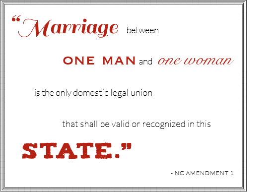

In June 2015, the US Supreme Court is expected to issue a decision on same-sex marriage that will create a nationwide standard for marriage equality. For now, however, laws and restrictions on same-sex marriage are a state-by-state hodge-podge of judicial rulings, consitutional amendments, and partisan legislation.
As in many states, the road to marriage equality in North Carolina has been a bumpy one, with legislative roadblocks and confusing jurisdictional debates along the way. Keeping track of how it all fits together can be confusing.
Luckily, this timeline will take you through the story from start to finish; covering all you need to know about North Carolina's road to marriage equality!
JUNE 1996
Senator James Forrester
LEGISLATIVE BAN PASSED
In June 1996, the North Carolina General Assembly passed Senate Bill 1487, which declared "marriages between persons of the same gender not valid" as well as same-sex marriages performed outside the state of North Carolina.
The primary sponsor of the legislation was Senator James Forrester, a lifelong supporter of traditional marriage. The bill passed 41-4 in the Senate and 98-10 in the House of Representatives.
SEPT. 2011

NC AMENDMENT ONE
In September 2011, the North Carolina General Assembly passed North Carolina Amendment One, a constitutional amendment banning same-sex marriage. The votes on the amendment split along party lines, with the exception of ten Democrats in the House of Representatives who voted for the amendment.
MAY 2012
VOTE ON AMENDMENT ONE
North Carolina voters cast their ballots on May 8th, 2012. Amendment One passed with 61% of the popular vote with only 39% voting to reject the amendment, despite earlier polls predicting a much closer race. It recieved a majority of the vote in 92 out of 100 counties. With that vote, North Carolina became the 30th state in the nation to ban same-sex marriage in their constitution.
JUNE 2012
Five of the six families involved in the lawsuit.Photo by Justin Cook. Source: Indy Week
THE LAWSUITS BEGIN
In June 2012, shortly after Amendement One passed with a definitive majority, six same-sex couples filed Fisher-Borne v. Smith seeking the right to adoption with multiple same-sex parents.
JUNE 2013
Edith Windsor and Thea Spyer. Windsor filed against the federal government when she was forced to pay estate tax on her deceased wife's, Spyer's, estate, unlike heterosexual married couples.
US v. WINDSOR
In June 2013, the US Supreme Court gave a landmark decision in US vs. Windsor that struck down the Defense of Marriage Act.
In response, the plaintiffs in Fisher-Borne v. Smith amended their suit to challenge the constitutionality of the North Carolina same-sex marriage ban.
APRIL 2014
GERBER v. COOPER and GENERAL SYNOD OF THE UNITED CHURCH OF CHRIST v. COOPER
In April of 2014, two different cases were filed against North Carolina's gay marriage ban. Gerber v. Cooper was filed by three same-sex couples who wanted their legal marriages in other states to be recognized in North Carolina.
The second suit was brought by the United Church of Christ along with a coalition of Baptists, Lutherans, and Unitarian Universalists. Their brief argued that North Carolina's same-sex marriage ban violated their religious freedom by making it a crime to officiate at a marriage lacking a valid state marriage license.
JULY 2014
Roy Cooper, North Carolina Attorny General
BOSTIC v. RAINEY
Earlier, in July of 2013, Bostic v. Rainey, a suit challenging Virginia's ban on same-sex marriage, had been filed in federal court. Because Virginia and North Carolina are both under the jursdiction of the 4th Circuit Court of Appeals, all the suits that had been filed in North Carolina were stayed, or halted, pending the outcome of Bostic v. Rainey.
In July 2014, the 4th Circuit Court of Appeals upheld the earlier finding of the US discrict court that Virginia's same-sex marriage ban was unconstitutional. The ruling was appealed to the Supreme Court.
Roy Cooper, the attorney general of North Carolina, responed to the 4th Circuit Courth ruling by saying he would no longer defend North Carolina's ban. He said "we know our law will almost surely be overturned as well. Simply put, it's time to stop making arguments we will lose and instead move forward knowing the ultimate resolution will likely come from the United States Supreme Court."
OCT. 2014
4th CIRCUIT and GENERAL SYNOD v. COOPER
On October 6th, 2014, the Supreme Court issued its refusal to review Bostic v. Rainey, letting the earlier ruling by the 4th Circuit Court of Appeals stand.
On October 7th, the plaintiffs in General Synod v. Cooper requested an immediate injunction against North Carolina's same-sex ban based on the 4th Circuit ruling.
On October 10th, District Court Judge Max Cogburn denied requests by NC legislators who wanted to intervene on behalf of the ban and declared the ban unconstitutional, creating...
...marriage equality in North Carolina!
2015
WE MADE IT.
But nationwide, the journey to marriage equality is still ongoing. The expected rulings from the Supreme Court in June will likely have a huge impact on the legality of same-sex marriage, but each state has a unique and complicated story. As you've learned from this timeline, the path is often circuitous and confusing.
Click on each state to learn about the status of marriage equality there.